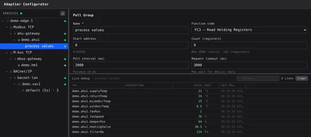
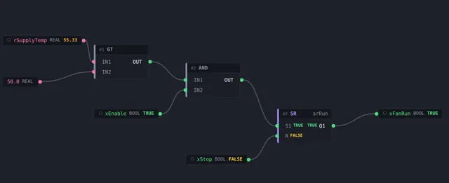
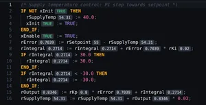
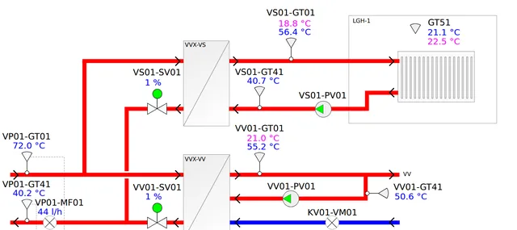
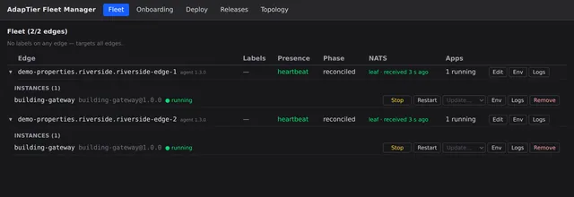
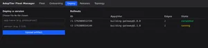

Define a point once. Use it everywhere.
Each device point gets one name, with its limits and state texts, and control logic, screens, history and central all use that same point. There is no separate tag database per tool. Configure it in the browser; changes apply live, without a restart.
- Writes are checked against the point's limits and state texts where they reach the device — whichever screen or central user sends them
- Configure every edge from central; two people editing the same configuration cannot overwrite each other
- Sandboxed scripts decode proprietary formats

No install. No laptop on site.
Write IEC 61131-3 control logic in the browser, deploy it to any edge through central, and debug it online. You don't need an engineering workstation or a VPN into each plant.
- Program, deploy and debug on your own login, with separate rights to view, debug and deploy
- Every deploy is kept as a snapshot you can diff against and restore
- Bring existing Codesys code; export to PLCopen XML


One screen library. Every site.
Each customer's screens live in one central library, not in a project file per site. Publish a change once and every edge has it within seconds. Each edge serves its screens itself, so they keep working when the internet is down.
- Drawings are checked on the way in: one carrying scripts or outside links is held back, and every edge keeps the last good version
- One central view of every site — a site that has gone offline is shown as out of date, not with its last values
- Operators change setpoints and acknowledge alarms from central when their role allows it

Plug in a box. Claim it. Done.
New edge nodes announce themselves; you assign them to a customer and site, and their applications deploy. Updates roll out the same way to every site.
- Onboarding by claim — a hardware swap is a re-claim into the same slot
- Staged rollouts: a canary first, then the rest — halting on a node that fails or keeps crashing, with rollback
- Updates from the release feed are signed and verified before they can be deployed
- Downgrades are refused unless explicitly allowed


Every building runs on its own. Together, one system.
Each AdapTier node runs its control, screens and alarms locally. Nodes in a building join a site hub, and sites report to central. Lose the internet and every building keeps running.
- A site hub keeps control and screens running across a site's nodes when the internet is down
- If the hub fails, nodes fall back to a direct cloud link automatically
- Values wait on site through a link outage — a day by default — and reach central's history without gaps
- One alarm list for every site, and a site that goes quiet raises an alarm itself
- After a week, a site catches central up in 44 seconds — about 200 kB — because only the latest value of each point crosses the internet
Under the hood: an open messaging backbone (NATS) connects every node — no proprietary middleware.
See it running on your buildings.
Building automation you run like software — from a single plant room to a portfolio.